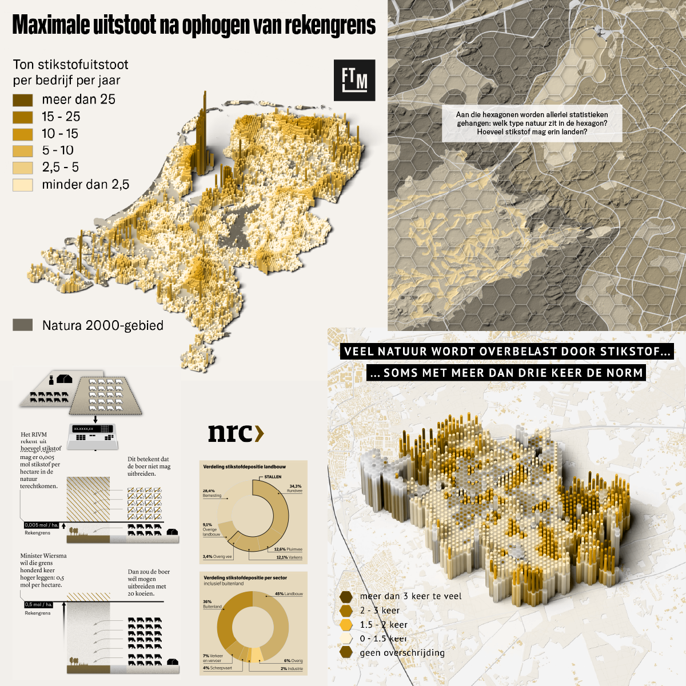
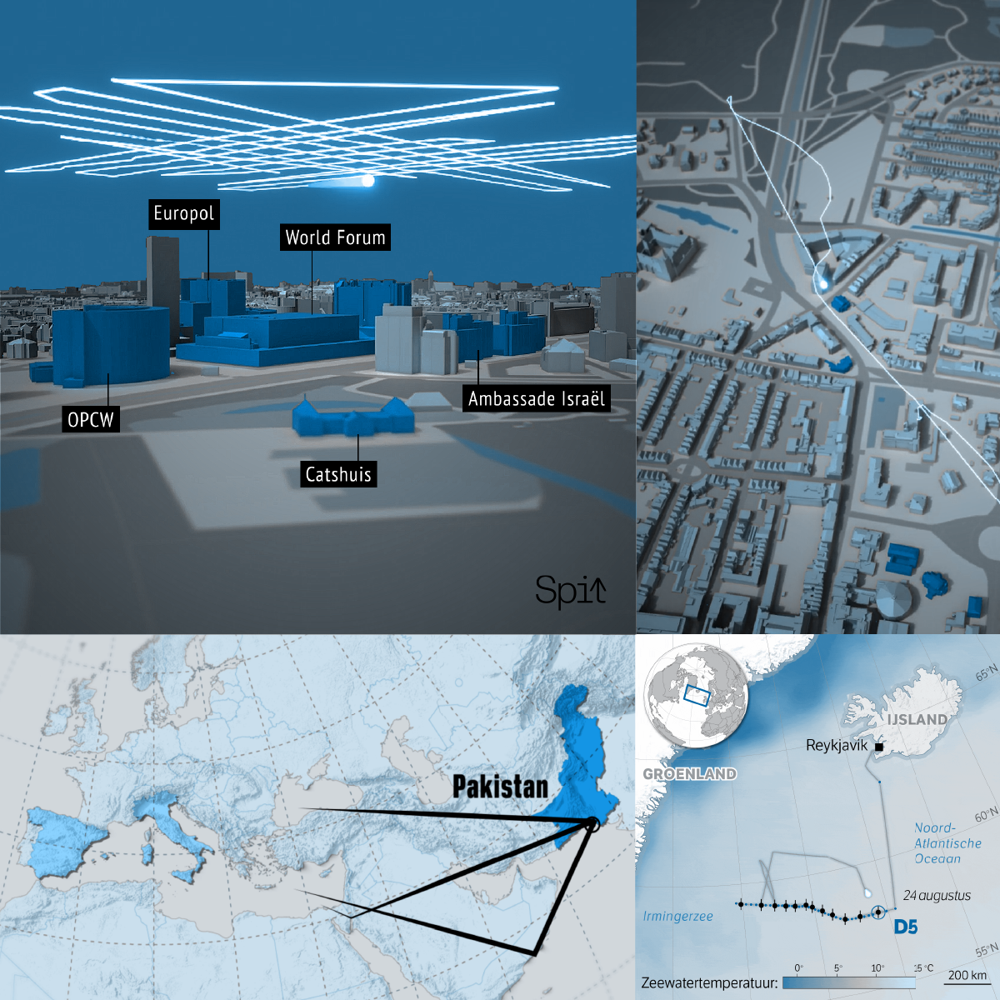

Data-ontwerper
met een geo-instinct
Ik help redacties en onderzoeksorganisaties hun verhalen visueel sterker maken. Mijn vertrekpunt is vaak geografische analyse — patronen in data, bewegingen, veranderingen over tijd. De visualisatievorm volgt het verhaal.
Werk



